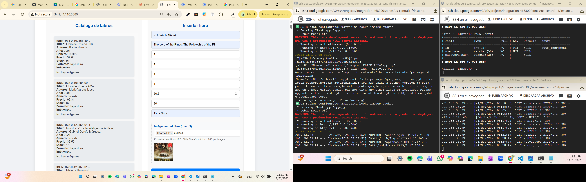
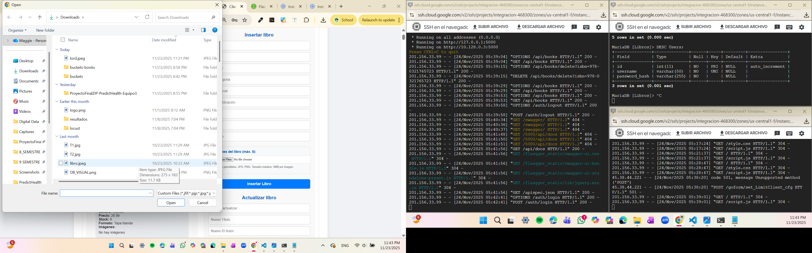
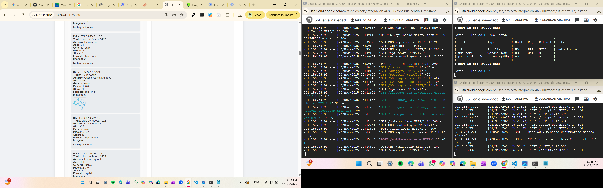
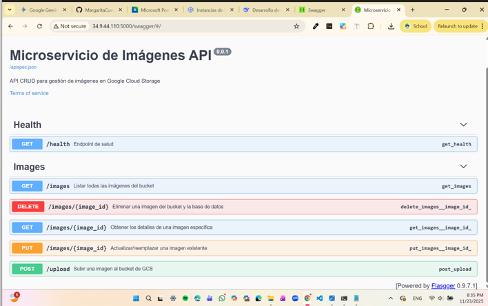

En este ejercicio evolucionamos el microservicio de gestión de libros (Books). Previamente, este servicio ya contaba con autenticación segura (JWT) y caché de alto rendimiento (Redis). El nuevo requerimiento consistió en integrar capacidades de almacenamiento en la nube (Google Cloud Storage) para permitir la carga, visualización y actualización de las portadas de los libros.
Esta integración transforma la aplicación en una solución completa, desacoplando el almacenamiento de archivos estáticos de la base de datos relacional.
Se actualizó el esquema de la base de datos MySQL mediante el script LibrosBucket.sql para incluir la referencia a la imagen remota.
-- Fragmento LibrosBucket.sql
CREATE TABLE IF NOT EXISTS libros (
id INT AUTO_INCREMENT PRIMARY KEY,
isbn VARCHAR(20) NOT NULL UNIQUE,
titulo VARCHAR(255) NOT NULL,
-- Se agrega campo para la URL pública del bucket
imagen_url VARCHAR(255),
...
);El backend se robusteció con funciones para validar extensiones y gestionar la comunicación con GCP.
# Fragmento app.py - Validaciones y Subida
ALLOWED_EXTENSIONS = {'png', 'jpg', 'jpeg', 'gif'}
app.config['MAX_CONTENT_LENGTH'] = 5 * 1024 * 1024 # Límite 5MB
def upload_file_to_bucket(file, filename):
bucket = storage_client.bucket(app.config['BUCKET_NAME'])
blob = bucket.blob(filename)
blob.upload_from_file(file)
return blob.public_url
def delete_file_from_bucket(image_url):
# Lógica para extraer el nombre del archivo y eliminarlo
filename = image_url.split('/')[-1]
blob = bucket.blob(filename)
blob.delete()
Se realizaron pruebas exhaustivas para validar los criterios de aceptación definidos. A continuación se presenta la evidencia gráfica.
Prueba: Carga de un libro nuevo con portada en formato JPG válida.
Resultado Esperado: Código 201 Created y URL de imagen generada.

Prueba: Intento de subir un archivo no permitido (ej. documento PDF o ejecutable EXE o mayor a 5 Megabytes).
Resultado Esperado: Rechazo inmediato con código 400.
Resultado Esperado: Error 413 Payload Too Large.

Prueba: Actualización de un libro existente reemplazando su portada.
Validación: La nueva imagen aparece en el bucket y la anterior es eliminada automáticamente para no generar basura digital.

Para facilitar el consumo del microservicio, se habilitó la documentación interactiva mediante Swagger UI.
http://[IP_VM]:5000/api/docs

La integración de Buckets en el microservicio de Books ha sido exitosa. El sistema ahora es capaz de gestionar contenido multimedia de forma eficiente y segura, cumpliendo con todas las reglas de validación de negocio (tamaño y tipo) y manteniendo la base de datos ligera al almacenar solo referencias URL.
Descargar Código Fuente (.zip)